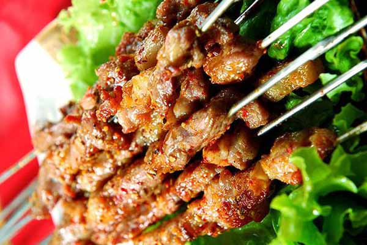
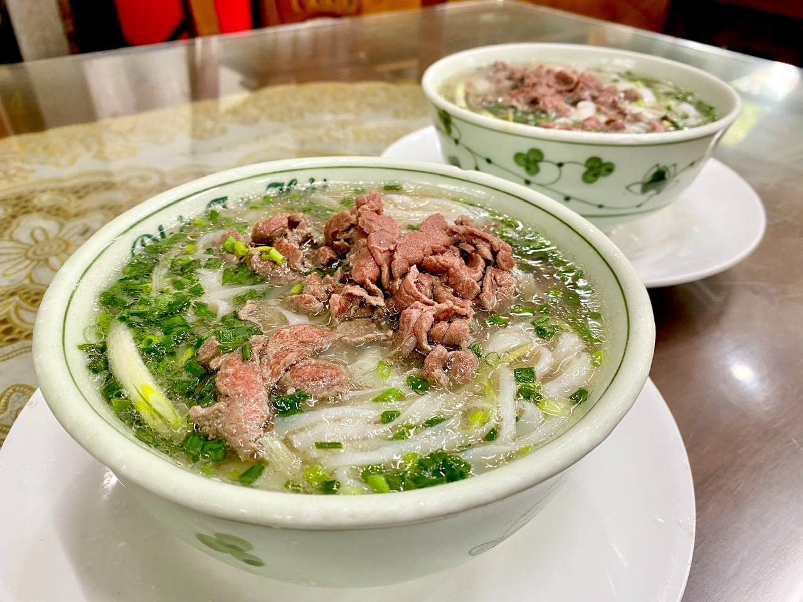

1. Nguyên liệu: 1kg thịt heo (thăn hoặc ba chỉ)2 nhánh sả, 1 củ tỏi, 1 củ hành (xay nhuyễn)Gia vị: 35g đường nâu, 12g hạt tiêu, 25ml nước mắm, 20ml xì dầu, 15ml dầu ăn (thêm 1 thìa sa tế nếu thích ăn cay).

2. Các bước thực hiện:Bước 1 (Ướp thịt): Trộn đều sả, hành, tỏi, đường nâu với tất cả gia vị. Thái thịt dày khoảng 1 cm, dùng sống dao băm nhẹ cho mềm rồi ướp với hỗn hợp xốt trong 30 phút.Bước 2 (Nướng thịt): Nướng bằng lò ở 200°C hoặc bếp than hoa. Nướng khoảng 15 phút thì lật mặt, nướng tiếp đến khi thịt chín xém vàng.Bước 3 (Thưởng thức): Dùng kèm cơm trắng, rau sống hoặc bún.
1. Nguyên liệu Thịt & Xương: 1kg xương ống bò, 500g thịt bò (thái mỏng).Hương liệu: 1 củ hành tây, 5 củ hành tím, 1 củ gừng, 1 thanh quế, 3 hoa hồi, 1 thảo quả.Ăn kèm: 1kg bánh phở, hành lá, rau mùi, chanh, ớt.

2. Các bước làm Bước 1 (Sơ chế): Luộc sơ xương bò 10 phút, vớt ra rửa sạch.Bước 2 (Nướng): Nướng cháy xém hành tây, hành tím, gừng rồi rửa sạch. Rang thơm quế, hồi, thảo quả rồi cho vào túi vải.Bước 3 (Ninh nước dùng): Ninh xương với 3 lít nước cùng hành, gừng nướng trong 3 - 4 tiếng (mở nắp, vớt bọt). Trước khi tắt bếp 45 phút, cho túi gia vị vào. Nêm muối, đường phèn, nước mắm vừa ăn.Bước 4 (Hoàn thành): Chần bánh phở cho vào tô, xếp thịt bò và hành ngò lên trên. Chan nước dùng thật sôi vào và thưởng thức.
1. Nguyên liệu Nhân: Thịt ba chỉ, tôm tươi, bún tươi.Rau: Xà lách, rau thơm, dưa leo, cọng hẹ.Cuộn & chấm: Bánh tráng, tương hột, bơ đậu phộng.
2. Các bước làm Sơ chế: Luộc chín thịt ba chỉ (thái mỏng). Luộc chín tôm (lột vỏ, xẻ đôi). Rửa sạch các loại rau.Làm nước chấm: Xay nhuyễn tương hột + bơ đậu phộng + đường + nước lọc. Phi thơm tỏi băm, cho hỗn hợp vào nấu liu riu đến khi sệt lại. Thêm đậu phộng rang và ớt.Cuốn gỏi: Làm ướt bánh tráng. Xếp rau, bún, thịt ở phía dưới. Xếp tôm (mặt đỏ ngửa xuống) và cọng hẹ ở phía trên. Gập hai bên mép và cuộn chặt tay từ dưới lên.